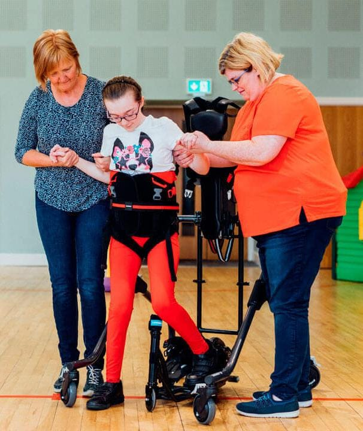
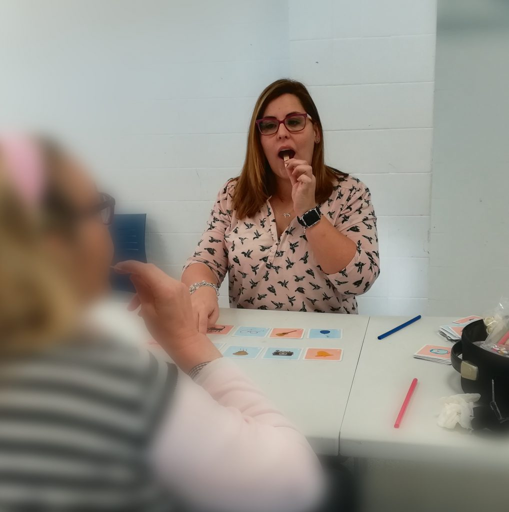
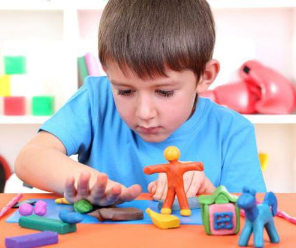

Ingreso y apoyo para las familias

Apoyo a la primera infancia

Fisioterapia

Logopedia

Estimulación temprana

Entrenamiento cognitivo

Motricidad

Terapia ocupacional

Apoyo a jovenes

Proximos eventos

Otros servicios